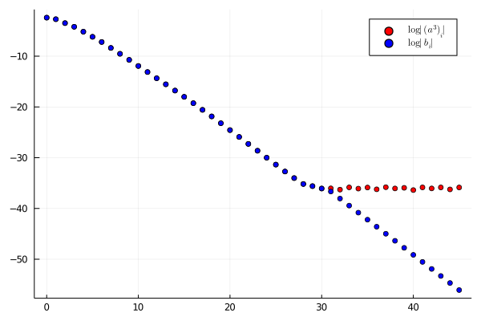

Sequences
A Sequence is a structure representing a compactly supported sequence of a SequenceSpace.
RadiiPolynomial.Sequence — TypeSequence{T<:SequenceSpace,S<:AbstractVector}Compactly supported sequence of the given space.
Fields:
- space :: T
- coefficients :: S
Arithmetic
The arithmetic operations +,-,*,^ are implemented along with the convenient bar operations +̄,-̄,*̄,^̄ (+\bar<TAB>, -\bar<TAB>, *\bar<TAB>, ^\bar<TAB>) which are equivalent to
+̄(a::Sequence...) = project(+(a...), mapreduce(aᵢ -> aᵢ.space, ∪̄, a))
-̄(a::Sequence...) = project(-(a...), mapreduce(aᵢ -> aᵢ.space, ∪̄, a))
*̄(a::Sequence...) = project(*(a...), mapreduce(aᵢ -> aᵢ.space, ∪̄, a))
^̄(a::Sequence, n::Int) = project(^(a, n), a.space)Divisions between sequences and other elementary functions (e.g. exp,log,cos,sin) are purposely not supported as, in general, they yield sequences which are not compactly supported.
julia> using RadiiPolynomial
julia> a = Sequence(Fourier(1, 1.0) ⊗ Taylor(2), [0.5, 0.0, 0.5, 0.0, 0.0, 0.0, 0.0, 1.0, 0.0]) # a(x,y) = cos(x) + y^2
Fourier{Float64}(1, 1.0) ⨂ Taylor(2):
(0.5) 𝜙⁽¹⁾₋₁ ⊗ 𝜙⁽²⁾₀
(0.0) 𝜙⁽¹⁾₀ ⊗ 𝜙⁽²⁾₀
(0.5) 𝜙⁽¹⁾₁ ⊗ 𝜙⁽²⁾₀
(0.0) 𝜙⁽¹⁾₋₁ ⊗ 𝜙⁽²⁾₁
(0.0) 𝜙⁽¹⁾₀ ⊗ 𝜙⁽²⁾₁
(0.0) 𝜙⁽¹⁾₁ ⊗ 𝜙⁽²⁾₁
(0.0) 𝜙⁽¹⁾₋₁ ⊗ 𝜙⁽²⁾₂
(1.0) 𝜙⁽¹⁾₀ ⊗ 𝜙⁽²⁾₂
(0.0) 𝜙⁽¹⁾₁ ⊗ 𝜙⁽²⁾₂
julia> a^2 # a(x,y)^2 = cos^2(x) + 2cos(x)y^2 + y^4
Fourier{Float64}(2, 1.0) ⨂ Taylor(4):
(0.24999999999999997) 𝜙⁽¹⁾₋₂ ⊗ 𝜙⁽²⁾₀
(0.0) 𝜙⁽¹⁾₋₁ ⊗ 𝜙⁽²⁾₀
(0.5) 𝜙⁽¹⁾₀ ⊗ 𝜙⁽²⁾₀
(0.0) 𝜙⁽¹⁾₁ ⊗ 𝜙⁽²⁾₀
(0.25000000000000006) 𝜙⁽¹⁾₂ ⊗ 𝜙⁽²⁾₀
(0.0) 𝜙⁽¹⁾₋₂ ⊗ 𝜙⁽²⁾₁
(0.0) 𝜙⁽¹⁾₋₁ ⊗ 𝜙⁽²⁾₁
(0.0) 𝜙⁽¹⁾₀ ⊗ 𝜙⁽²⁾₁
(0.0) 𝜙⁽¹⁾₁ ⊗ 𝜙⁽²⁾₁
(0.0) 𝜙⁽¹⁾₂ ⊗ 𝜙⁽²⁾₁
⋮
(0.0) 𝜙⁽¹⁾₋₂ ⊗ 𝜙⁽²⁾₃
(0.0) 𝜙⁽¹⁾₋₁ ⊗ 𝜙⁽²⁾₃
(0.0) 𝜙⁽¹⁾₀ ⊗ 𝜙⁽²⁾₃
(0.0) 𝜙⁽¹⁾₁ ⊗ 𝜙⁽²⁾₃
(0.0) 𝜙⁽¹⁾₂ ⊗ 𝜙⁽²⁾₃
(-1.1492543028346347e-16) 𝜙⁽¹⁾₋₂ ⊗ 𝜙⁽²⁾₄
(0.0) 𝜙⁽¹⁾₋₁ ⊗ 𝜙⁽²⁾₄
(1.0) 𝜙⁽¹⁾₀ ⊗ 𝜙⁽²⁾₄
(0.0) 𝜙⁽¹⁾₁ ⊗ 𝜙⁽²⁾₄
(1.1492543028346347e-16) 𝜙⁽¹⁾₂ ⊗ 𝜙⁽²⁾₄The internal routines of the multiplication are based on the fast Fourier transform (FFT) which needed to be re-implemented to ensure compatibility with IntervalArithmetic.jl. It is important to keep in mind that the interval representation widens severely with complex number multiplication which conflicts with the FFT algorithm. This has been taken into account by implementing *(a::Sequence, b::Sequence, c::Sequence...) such that we only perform the FFT algorithm twice.
julia> using RadiiPolynomial, IntervalArithmetic
julia> space = Taylor(2^12-1)
Taylor(4095)
julia> a = Sequence(space, [@interval(x) for x ∈ rand(length(space))])
Taylor(4095):
([0.604952, 0.604953]) 𝜙₀
([0.72847, 0.728471]) 𝜙₁
([0.73989, 0.739891]) 𝜙₂
([0.242241, 0.242242]) 𝜙₃
([0.870651, 0.870652]) 𝜙₄
([0.214152, 0.214153]) 𝜙₅
([0.411969, 0.41197]) 𝜙₆
([0.475237, 0.475238]) 𝜙₇
([0.650668, 0.650669]) 𝜙₈
([0.796461, 0.796462]) 𝜙₉
⋮
([0.660371, 0.660372]) 𝜙₄₀₈₆
([0.560526, 0.560527]) 𝜙₄₀₈₇
([0.383654, 0.383655]) 𝜙₄₀₈₈
([0.979247, 0.979248]) 𝜙₄₀₈₉
([0.723514, 0.723515]) 𝜙₄₀₉₀
([0.17094, 0.170941]) 𝜙₄₀₉₁
([0.82178, 0.821781]) 𝜙₄₀₉₂
([0.663751, 0.663752]) 𝜙₄₀₉₃
([0.976392, 0.976393]) 𝜙₄₀₉₄
([0.743872, 0.743873]) 𝜙₄₀₉₅
julia> maximum(radius.(a))
1.1102230246251565e-16
julia> maximum(radius.(a^3))
4.2677856981754303e-7
julia> maximum(radius.(a^5))
3.5732421875The above shows a considerable loss of accuracy. Although, in practice series exhibit a decay which prevents such a large error to occur. Indeed, if we add a small decay to our series:
julia> using RadiiPolynomial, IntervalArithmetic
julia> space = Taylor(2^12-1)
Taylor(4095)
julia> a = Sequence(space, [@interval(rand()/4.0^i) for i ∈ eachindex(space)])
Taylor(4095):
([0.477052, 0.477053]) 𝜙₀
([0.024103, 0.0241031]) 𝜙₁
([0.0415354, 0.0415355]) 𝜙₂
([0.0124528, 0.0124529]) 𝜙₃
([0.00107081, 0.00107082]) 𝜙₄
([0.000902476, 0.000902477]) 𝜙₅
([0.00017675, 0.000176751]) 𝜙₆
([4.54046e-05, 4.54047e-05]) 𝜙₇
([1.04511e-05, 1.04512e-05]) 𝜙₈
([1.2448e-06, 1.24481e-06]) 𝜙₉
⋮
([0, 3.76513e-309]) 𝜙₄₀₈₆
([0, 4.87929e-310]) 𝜙₄₀₈₇
([0, 1.67026e-309]) 𝜙₄₀₈₈
([0, 3.63261e-309]) 𝜙₄₀₈₉
([0, 3.11772e-309]) 𝜙₄₀₉₀
([0, 4.50779e-309]) 𝜙₄₀₉₁
([0, 4.2497e-309]) 𝜙₄₀₉₂
([0, 1.29104e-309]) 𝜙₄₀₉₃
([0, 4.64019e-309]) 𝜙₄₀₉₄
([0, 1.40993e-309]) 𝜙₄₀₉₅
julia> maximum(radius.(a^5))
9.558999209534402e-16The intervals precision can be adjusted via setprecision (cf. IntervalArithmetic.jl).
However, in Computing Discrete Convolutions with Verified Accuracy Via Banach Algebras and the FFT the author shows how to rigorously bound convolutions to avoid machine precision limitations. The algorithm can be used via the banach_algebra_rounding! function.
julia> using RadiiPolynomial, IntervalArithmetic
julia> space = Taylor(2^4-1);
julia> a = Sequence(space, [@interval(rand()/4.0^i) for i ∈ eachindex(space)]);
julia> C = norm(a, 4.0)^3;
julia> ν = [@interval(C/4.0^i) for i ∈ 0:3order(space)];
julia> a³ = a^3;
julia> b = banach_algebra_rounding!(a^3, ν);